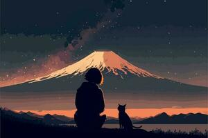
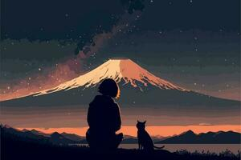

¿Que lugares visitar de Japón?
1-.Monte Fuji

Imagínate despertar con una brisa suave y fresca, levantar la vista y ver frente a ti la silueta perfecta del Monte Fuji, iluminada por un cielo que parece pintado a mano. No es casualidad que este lugar aparezca en tantos animes: es un escenario que hipnotiza. Cada detalle —desde los árboles que rodean sus lagos hasta la nieve que corona su cima— parece diseñado para robarte el aliento. En muchos animes, el Monte Fuji no es solo un fondo: es un símbolo de calma, belleza y sueños por alcanzar. Al visitarlo, no solo lo ves… lo sientes. Caminas entre paisajes que ya has visto brillar en historias animadas y, de pronto, estás dentro de ellas. Es como si la realidad y la fantasía se fundieran en un solo instante mágico. Si alguna vez has soñado con estar en un lugar que te haga suspirar sin decir una sola palabra, este es ese lugar. No es solo un viaje… es una experiencia que te marca.
 


2-.Viaje en tren por Japón

Viaje por Japón con toda la elegancia de un vagón de tren. El tren es uno de los principales medios de transporte de los japoneses. Desde el servicio especial en el tren Shinkansen con diseño de Hello Kitty hasta las vistas paradisíacas del monte Yatsugatake en el HIGH RAIL 1375, pasando por un viaje de lujo en el Twilight Express Mizukaze o el Royal Express, la comodidad, la belleza paisajística y la cultura están vivas en Japón. El Japan Rail Pass es un billete de transporte económico que ofrece viajes ilimitados en la mayoría de los trenes operados por el Japan Railways Group, incluidos los shinkansen (trenes bala), para los turistas extranjeros que visitan Japón.